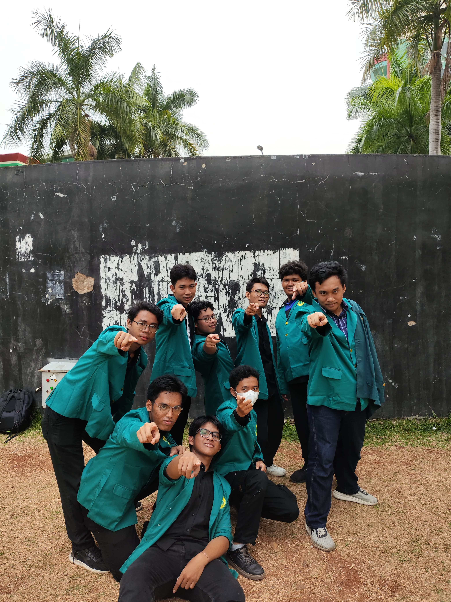

Halo! Nama saya Gideon Miracle Sihombing.
Saya adalah mahasiswa Ilmu Komputer dari Universitas Negeri Jakarta.
Saya seorang mahasiswa yang tertarik pada Machine Learning dan Analisis Data. Saya juga memiliki ketertarikan untuk memecahkan masalah yang membutuhkan logika dan juga penalaran yang kuat akan masalah yang diberikan
| Institution | Degree | Year |
|---|---|---|
| SMP Negeri 193 Jakarta | SMP | 2018 - 2021 |
| SMA Unggul Del | SMA | 2021 - 2024 |
| Universitas Negeri Jakarta | Ilmu Komputer (S1) | 2024 - Present |
Selama bertahun-tahun, saya telah berkembang baik secara pribadi maupun profesional. Saya belajar pentingnya ketekunan, kerja sama tim, dan pembelajaran yang berkelanjutan. Pengalaman-pengalaman ini telah membentuk saya menjadi pribadi seperti sekarang.
Saya juga semakin peduli terhadap sesama, berusaha membantu dan mendukung orang di sekitar saya. Selain itu, saya merasa lebih siap untuk mengemban tanggung jawab yang lebih besar di masa depan.
Tujuan karier saya ke depan adalah menjadi seorang machine learning analyst. Machine learning analyst adalah profesional yang menganalisis data dan membangun model pembelajaran mesin untuk menemukan pola, membuat prediksi, serta membantu pengambilan keputusan berbasis data. Saya ingin berkontribusi dalam pengembangan teknologi kecerdasan buatan dan memanfaatkan data untuk memberikan solusi inovatif di berbagai bidang.
Ini adalah beberapa dokumentasi yang merepresntasikan perjalanan saya hingga saat ini.
